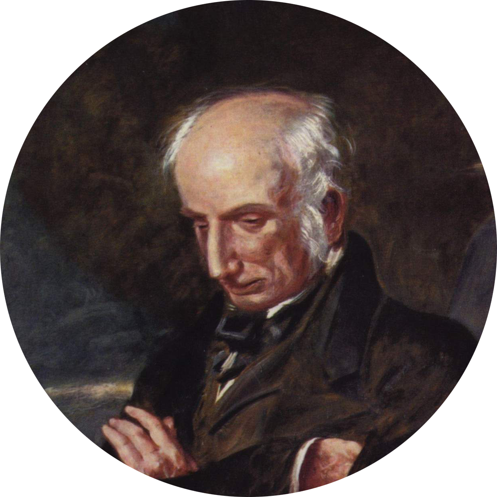
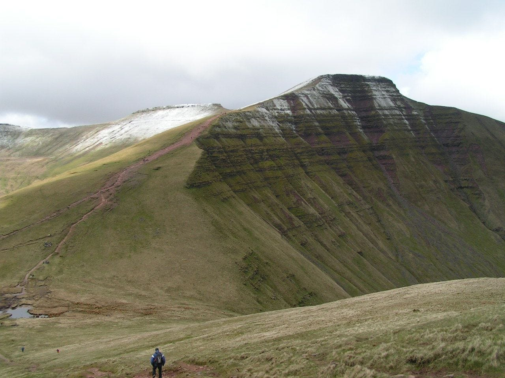
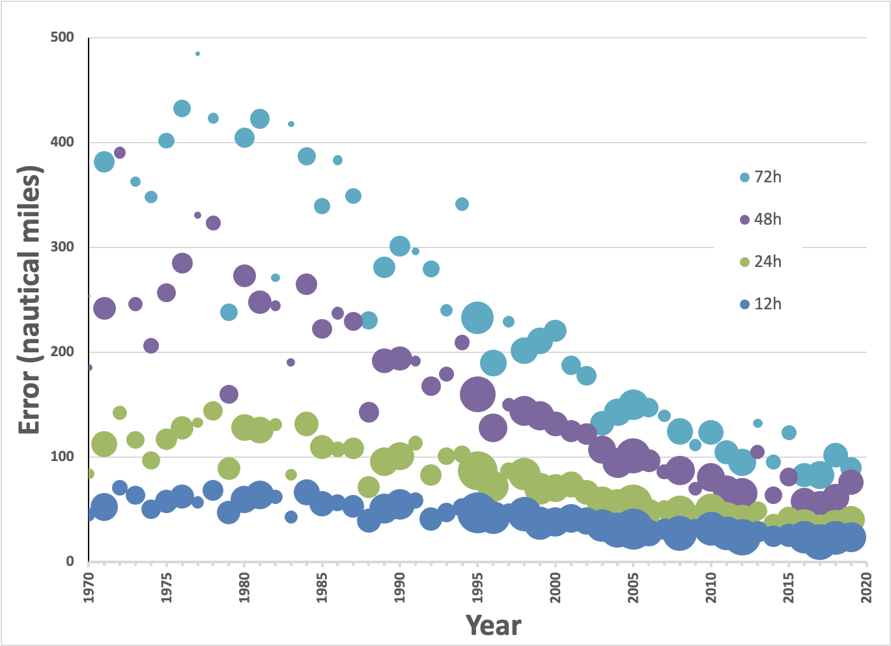

I’m Jonathan Burbaum, and this is Healing Earth with Technology: a weekly, Science-based, subscriber-supported serial. In this serial, I offer a peek behind the headlines of science, focusing (at least in the beginning) on climate change/global warming/decarbonization. I welcome comments, contributions, and discussions, particularly those that follow Deming’s caveat, “In God we trust. All others, bring data.” The subliminal objective is to open the scientific process to a broader audience so that readers can discover their own truth, not based on innuendo or ad hominem attributions but instead based on hard data and critical thought.
You can read Healing for free, and you can reach me directly by replying to this email. If someone forwarded you this email, they’re asking you to sign up. You can do that by clicking here.
Like Science itself, I refer to facts established previously, so I recommend reading past posts in order if this is your first encounter. To catch up to this point will take approximately 22 minutes of your time. [Or, of course, more, if you decide to think.]
Today’s read: 13 minutes.
A prologue. This issue has been the hardest to write by far. Unlike the first two issues, I find myself relying on faith (“trust the Science”) without being able independently to verify what is true from public data. I’ve had to rely on analogy to get more comfortable, but even then, I reach a rather unsettling answer to the title question. On a warmer Earth, “Bad things are more likely to happen.” But I don’t think we can know exactly what will happen, or when. I sense that the consequences of global warming are not simply unknown to me, but are unknowable to Science. If there are readers who shed light here, I welcome your comments and would love to include your take in a later issue.
In the wake of the last newsletter, I went down a rabbit hole around the Wordsworth line on the face page of Nature in 1886. The Internet can be a wonderful thing.
The line reads, “To the solid ground Of Nature trusts the mind which builds for aye.”, and it is from a poem, published in 1823, called “A Volant Tribe of Bards on Earth Are Found”. For those of you who know me socially, poetry’s not really my thing. Still, it’s a short poem, and I think it’s worth a read, even if you have to look up several words and phrases. (I did.1) The modernized title is “A Fledgling Tribe of Storytellers Have Been Found on Earth”. In the eyes of the 19th-century publishers of Nature, this surely referred to the relatively recent emergence of the Sciences as a proper discipline at Universities, alongside the old standards, Religion, Philosophy, and the Classics. That intellectual transformation was trending in 1823 (birth year of the Oxford Union, one of the oldest university debate clubs in the world).
I found the last lines of the poem both beautiful and on point:

Wordsworth on Helvellyn by Benjamin Robert Haydon
Where even the motion of an Angel's wing Would interrupt the intense tranquility Of silent hills, and more than silent sky.
That’s quite a connection with the theme of this newsletter, so I’ll come back to it.
The story continues…
Where are we on our journey? We’re now aware of two relevant facts, both supported by data that you can judge for yourself. Earth is getting a little warmer, and the temperatures we measure are consistent with rising carbon dioxide levels in the air. This brings us to the set phrase at the center of this series, “climate change”, which is often used interchangeably with “global warming”, a phrase I discussed earlier.
“Climate change” is decidedly non-scientific. I think we all know what “climate” is. It’s a yearly pattern of weather, like “tropical”, “arctic,” and “desert”, an average over time, and characteristic of a particular location. We can define a “climate” but we cannot measure one! [Google isn’t even clear on how many climates there are!]
Plus, Earth is one planet. Is only one climate going to change? If not, shouldn’t it be plural? That would make the phrase “climates change”, vaguely reminiscent of “stuff happens”, which is unnerving for something allegedly based in Science.
And then there’s the word “change”. Talk about muddying the waters! Our experiences and the Ancient Greeks tell us that the only constant in life is “change”! It’s no wonder there are skeptics and deniers. Does “climate change” mean that Anchorage and Miami are going to swap climates abruptly? If that’s what’s being denied, then I’m at least a skeptic, if not a denier, too! And if climates didn’t change, who would care or notice?
But the key to appreciating the phrase “climate change” is precisely that: Based on our everyday experiences, we don’t expect climates to change, so climate change is really about predicting the unprecedented. That’s why it’s easy to deny, but it’s also where Science can shed at least some light.
One key question that I’d like to address over time is:
How in God’s name2 can such small temperature differences impact something as huge as our climates?

This is a long hill, so we’re going to need to take it in a few stages if we’re ever going to reach the top. To answer this question with data necessarily leads back to one of the thorns in my side, computer models. As I said earlier, I don’t put a whole lot of stock in models, as a rule. My anxiety is heightened because climate models need to be predictive, meaning they need to see into the future. Hah! To my ear, it sounds an awful lot like gambling or stock picking, activities where, if you can predict the future with certainty, you can get rich quick. [I don’t know of any filthy rich climate scientists. I suppose Bill Gates is an exception. But, like me, he became a part-time climate scientist late in his career.] I’m a lot more comfortable with descriptive models that Science can validate with data.
Let’s return to the highlighted lines from Wordsworth. The couplet describes another feature of climate modeling, called “the butterfly effect” (something Wordsworth may have called, in a less poetic moment, “the Angel effect”). I ask you, could anyone describe Earth’s reliable climates any more beautifully than as the “intense tranquility of silent hills, and more than silent sky.”?
In simple terms, the “butterfly effect” (in prototype, the minuscule breeze of a butterfly in flight that results in a tornado) means that minor disturbances today can produce huge changes tomorrow.
Or not.
Fortunately for us, it’s a rare butterfly that produces a tornado! But the effect, first identified in computer simulations of weather forecasting, has generated an entire field of mathematics called “chaos theory”. [That phrase isn’t very soothing, either! If the aim is to develop models that predict the future, how in Hell can one based in chaos ever be “useful”?]
I will keep my promise not to require any math, but there’s a lot of heavy math that confirms chaos theory, and everyone agrees that this math is hard. Even mathematicians! [Characteristically, they’ve had to prove that exact answers are impossible.] What they have discovered, though (and it’s pretty obvious when you think about it), is that the more data you collect and the closer you are to the future you want to predict, the more accurately you can predict possible outcomes, even though the answers will be imprecise. This rescues a virtue from my main anxiety about computer models: With a model, you can turn the knobs at will to see what happens “in theory”, and you always get an (imprecise) answer.
The essence of these models is statistics, so you can visualize chaos theory in climate models as if you were wagering on a horse race while it’s happening—your chance of picking the winner improves the closer the horses get to the finish line. But even then, there can be rallies down the stretch and photo finishes, so you can still lose even very late in the race. But, the more times you place a winning bet and the more you know about the entrants, the better you become at picking winners earlier in the race. Computer models based in chaos, even with supercomputer power, can never reach 100%, but that doesn’t mean that we can’t use them rationally to establish trends and tendencies.
As I stated in the first newsletter, “Is Global Warming Real?”, my objective is to establish just one scientific fact per newsletter with data. In this case, there are many scientifically-stamped conclusions blamed on global warming, and some allegedly are already happening. Those will be deferred to future newsletters, although I certainly welcome comments about which dire warnings about the future are of greatest interest. [A personal favorite: The North Pole will end up in Paris. Seriously?]
Let’s move straight to the heart of the matter. The most interesting question at hand is, “Is there data that climate models are predictive?”
This is a troublesome question since climates haven’t changed yet (we suppose), and, as mathematicians tell us, exact answers are impossible because of chaos. So we can never develop a climate model free of error. A question we can answer, however, is “Are climate models improving?” There are many models, and even more variables, plus forecasting (still) contains an element of art, so we’ll need to trust the soothsayers to a certain extent. But, there is a straightforward connection between weather and climate by definition. So, we can check past weather forecasts for accuracy and ask for data that show that our models of the earth and its atmosphere are improving.
To wit, consider hurricanes. I recently finished reading Isaac’s Storm, a book about the 1900 Category 4 hurricane (before meteorologists adopted modern naming conventions) that destroyed Galveston, Texas. This storm killed an estimated 8,000 people, making it one of the deadliest hurricanes ever recorded. At the time, hurricane tracking was so primitive that, just days before landfall, the National Weather Service projected that the storm would weaken and hit the Atlantic seaboard. Instead, it entered the Gulf of Mexico and strengthened before drowning Galveston under six feet of water. Since then, we’ve dramatically improved our ability to forecast tropical storms, particularly with advanced satellite data and high-speed computation. And, the accuracy of a hurricane forecast is data that we can track on a year-by-year basis. The data:

Absolute error in predicted location of Atlantic cyclones from 1970 to 2020. Data is reported by the National Hurricane Center and involves advance predictions of 12, 24, 48, and 72 hours. Since the number of storms varies and the number of predictions differs year to year, the size of the bubbles represents the number of predictions generated in any given year. To envision the size of the error, the straight line distance between Houston and New Orleans is 270 nautical miles.
Now, these are my kind of models—Sure, they’re still inaccurate, but they’re definitely useful. Scientists can test their predictions experimentally. And, they are based on measurable physical properties, including intrinsic properties of molecules in the atmosphere (see “Carbon. Hero or Villain?”). The atmospheric models of Earth that lead to climate forecasts must be consistent with those that lead to hurricane forecasts: Only the timescales, and affected regions are different (decades vs. days, and Earth vs. a few hundred nautical miles). We’re improving short-range weather forecasts, so it’s not a blind leap of faith to assert that we’re getting better at longer-range climate forecasts as well. Besides, it would be tragic indeed if we waited for our climates to change before we trust these models. [Lest you doubt the power of applied statistical analysis to accurately predict outcomes under uncertainty, I recommend a re-read of Michael Lewis’ masterwork, Moneyball.]
As always, you’re welcome to believe that the models are inaccurate and that we cannot know the future for certain. The mathematicians and computer modelers will agree with your assessment. Perhaps, though, you think that a cautious “wait and see” approach is prudent because of this uncertainty. To stretch the earlier analogy, once the horse race is over, it’s too late to place your bet! Climate models, while not 100% predictive, are practical, and they continue to improve. Every model includes temperature, and temperature (both local and average) affects many different physical properties of the atmosphere. So an experiment of sorts is possible. It’s just a matter of fiddling with the model’s temperature knob and seeing what happens to future weather patterns. That’s the underlying theme to all the catastrophic outcomes that are being predicted from global warming. As our atmospheric models improve, so too will our ability to forecast, but by the time we can comfortably forecast climate change, it’ll be too late.
In conclusion, an important question to consider is, “How precisely do today’s models predict when climate change will happen?” The Paris Agreement suggests that the tipping point is at 1.5-2°C above “preindustrial” levels. Since we’ve already used up 1-1.2° of that, and nothing much has happened, isn’t that just a scare tactic?
Perhaps. Are you feeling lucky? Do you really think you’re better at prediction than a supercomputer?
Food for thought: What do professional climate scientists say about climate change and the predictions of the models? [Apologies in advance for the dense prose, but I felt I should give you the full quotes before offering my interpretation.]
Well, they’ve turned the knobs of temperature to see what might happen.
“The [model] climate system tends to respond to [temperature] changes in a gradual way until it crosses some threshold: thereafter any change that is defined as abrupt is one where the change in the response is much larger than the change in the forcing. The changes at the threshold are therefore abrupt relative to the changes that occur before or after the threshold and can lead to a transition to a new state. The spatial scales for these changes can range from global to local. In this definition, the magnitude of the forcing and response are important. In addition to the magnitude, the time scale being considered is also important.”
…
“Unfortunately, the probability of such an event [referring to a large abrupt climate change without a change in temperature] is difficult to estimate as it requires a very long experiment and is certainly dependent on the mean state simulated by the model [in other words, how much the temperature has already risen]. Furthermore, comparison with observations is nearly impossible since it would require a very long period with constant forcing which does not exist in nature. Nevertheless, if an event such as the one of those mentioned above were to occur in the future, it would make the detection and attribution of climate changes very difficult.”3(Emphasis mine.)
This report was updated six years later to conclude:
“Several components or phenomena in the climate system could potentially exhibit abrupt or nonlinear changes, and some are known to have done so in the past. Examples include the AMOC [aka the Gulf Stream], Arctic sea ice, the Greenland ice sheet, the Amazon forest and monsoonal circulations. For some events, there is information on potential consequences, but in general there is low confidence and little consensus on the likelihood of such events over the 21st century.”4(Emphasis mine.)
The next installment of this series is due out next month, so we’ll see if the latest edition is any more illuminating.
The first paragraph describes what I would call a “phase change”, you can think of it as the melting of ice—A tiny temperature change can abruptly change a solid to a liquid in the way the scientists describe. The second paragraph describes why climate models are fundamentally untestable but still useful. And the third paragraph places climate change in a historical context: We know that Earth’s climates have changed along with temperature variation in the geologic past (including major changes), but we don’t know enough to predict when they might happen in the future.
My interpretation: Even the pros have only a vague notion of the tipping point, and it’s never going to be addressed with ironclad certainty. Models only tell us that there’s trouble a-brewing with business-as-usual. There’s a switch somewhere in our future if we continue to increase forcing (See “Carbon. Hero or Villain?” for an explanation of radiative forcing, ∆F, and its correlation with carbon dioxide). Once that switch is thrown, all bets are off. Everything is important (thank you, chaos), and even climate modeling nerds disagree about exactly what will happen or when. But they do agree on one thing: The closer we get to a temperature threshold, the more likely we are to see an abrupt change in climates even if we fail to control carbon dioxide emissions. Then, all we can predict with any certainty is that our climates will change quickly and in fundamentally unpredictable ways. We can indeed predict the unprecedented, namely, rapid change to weather patterns that humans have never experienced before.
From Section 8.7, “Mechanisms Producing Thresholds and Abrupt Climate Change” in Randall, D.A., R.A. Wood, S. Bony, R. Colman, T. Fichefet, J. Fyfe, V. Kattsov, A. Pitman, J. Shukla, J. Srinivasan, R.J. Stouffer, A. Sumi and K.E. Taylor, 2007: Climate Models and Their Evaluation. In: Climate Change 2007: The Physical Science Basis. Contribution of Working Group I to the Fourth Assessment Report of the Intergovernmental Panel on Climate Change [Solomon, S., D. Qin, M. Manning, Z. Chen, M. Marquis, K.B. Averyt, M.Tignor and H.L. Miller (eds.)]. Cambridge University Press, Cambridge, United Kingdom and New York, NY, USA.
Executive summary, pp. 1031-1033 in Collins, M., R. Knutti, J. Arblaster, J.-L. Dufresne, T. Fichefet, P. Friedlingstein, X. Gao, W.J. Gutowski, T. Johns, G. Krinner, M. Shongwe, C. Tebaldi, A.J. Weaver and M. Wehner, 2013: Long-term Climate Change: Projections, Commitments and Irreversibility. In: Climate Change 2013: The Physical Science Basis. Contribution of Working Group I to the Fifth Assessment Report of the Intergovernmental Panel on Climate Change [Stocker, T.F., D. Qin, G.-K. Plattner, M. Tignor, S.K. Allen, J. Boschung, A. Nauels, Y. Xia, V. Bex and P.M. Midgley (eds.)]. Cambridge University Press, Cambridge, United Kingdom and New York, NY, USA.